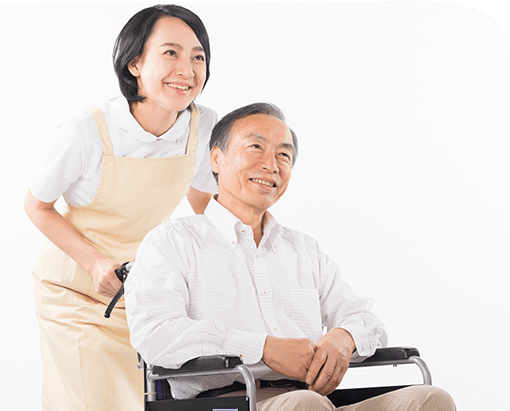
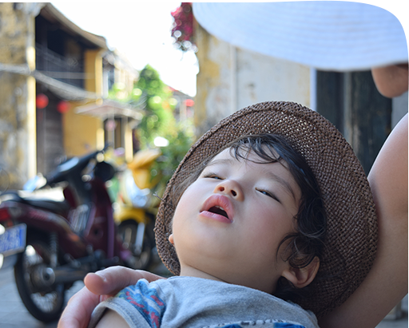
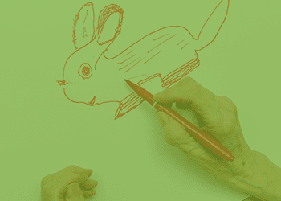
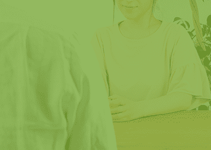
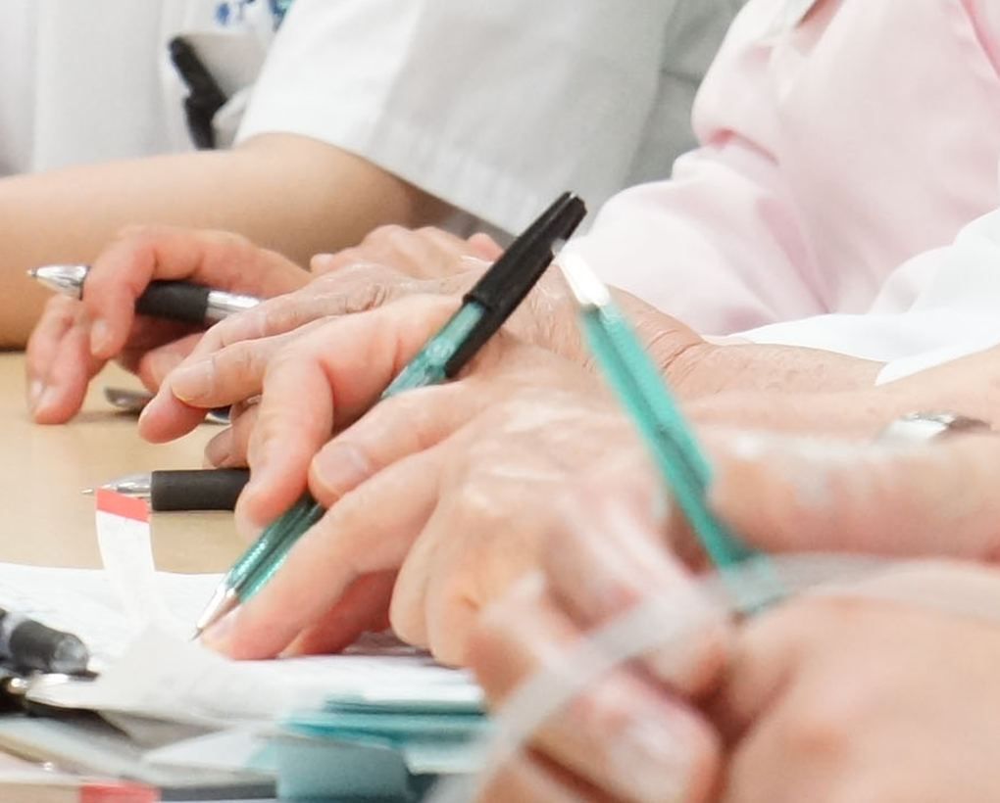
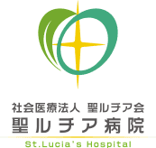

外来受診
精神科受診が始めての方・ご家族の皆様へ
心の病は知らぬ間に大きくなるもの。小さな内に対処することが肝心です。
しかし、精神科と聞くと
「なんだか行きづらいな・・」
「通っている事を周りに知られたくないな・・」
とマイナスイメージを持たれる方も多く、
病院へは行かずに不安な毎日を送られる方がいらっしゃいます。
当院ではそんな方でもお気軽に受診して頂けるように
専門家のスタッフが、まずはお電話やメールで症状や気になることなどを伺い、
診察や病気のお悩みを解消するところから始めます。
安心して受診して頂きたいから、患者様一人ひとりに合わせて、
心を込めてご対応いたします。
診療時間
| 月 | 火 | 水 | 木 | 金 | 土 | 日・祝 | |
|---|---|---|---|---|---|---|---|
| 9:00〜12:30 | ○ | ○ | ○ | ○ | ○ | ○ | × |
| 14:00〜17:00 | ○ | ○ | ○ | × | ○ | × | × |
初めて受診される方は、事前にご連絡をいただけると、スムーズに診療を行なうことができます。
診療科目

認知症・高齢者医療
認知症などの高齢者医療をデイケアや訪問介護を通じてサポートしております。認知症治療病棟では作業療法、音楽療法、回想法などのリハビリプログラムが充実しています。
児童思春期医療・発達障害
子どもの発達障害（自閉症、アスペルガー症候群、ADHD等）や精神障害、暴力・ひきこもりなどの治療を行います。
周産期医療
周産期のうつ病、不安、中絶・流産による悲哀、分娩に対する重度の反応(PTSD、控訴反応)、強迫性障害などの症状を治療します。
アルコール依存
アルコール等を止めたいのに止められない、社会生活に悪影響を及ぼしている、といった症状(依存症)を治療します。

てんかん医療
てんかんによる発作の症状（けいれん、手足の突っ張り、短時間の意識消失、全身や手足がビクッとするなど）を治療します。
摂食障害
拒食や過食に等によってダメージを受けた体の治療を行いながら疾患と向き合う心理教育、思考の偏り歪みに気付き修正する認知行動療法などを行います。
治療について
作業療法

各目的（気分転換・趣味を作る・自分の疾患を学ぶ・社会復帰）にそったコースを設けていますので、今後のご本人様の目的に沿った活動を選びやすいところが魅力です。
精神科医による精神療法・薬物療法

診察で主治医との対話を通し、支持的精神療法を行います。また、症状に合わせた適切な薬物の処方を行ないます。
臨床心理士心理カウンセリング
ご自身やご家族が悩んだり、困っていることについての話を聴きどうしたらよいか臨床心理士が一緒に考えていきます。認知療法や遊戯療法を取り入れることもあります。
疾患別プログラム
主に、統合失調症、気分障害、アルコール依存症と診断された方を対象に、病気の知識や治療に関すること、病気との付き合い方など、同じ疾患患者とグループ学習します。
診察・治療の流れ
1
お電話・メールでのご相談
0942-33-1581
(時間帯によってはお返事に時間を要する場合があります。)
お電話の場合まず事務職員が出ますので「受診の相談」とお伝えください。精神保健福祉士(ソーシャルワーカー)に代わり、今のお困りごとを簡単に伺い、初診の予約をお取りします。精神科の受診が初めてで、入院を検討されている場合は、病棟見学をお願いする場合があります。
2
初診(来院)
事務窓口へ保険証を提出して頂き、初診の受付けを行ないます。その後精神保健福祉士(ソーシャルワーカー)がお困りの症状や受診に至った経緯とその背景、治療歴、生活歴、家族歴などを個室で詳しくお話を伺います。症状に応じて、医師の指示で待ち時間の間に必要な検査を行います。
3
医師の診察
精神保健福祉士（ソーシャルワーカー）が聞き取った内容や検査結果をもとに、患者様と診察を行います。患者様の希望を聞きながら、今後の治療について見立て、薬物療法や心理カウンセリング、その他必要な検査などについて提案していきます。

入院が必要な場合
通院治療の場合
通院治療の場合は「4」へ。
入院が必要な場合は「5」へ。
4
休息やお薬の調整だけでなく、疾患別治療プログラムや作業療法などにも参加して頂き、リハビリを行います。退院後の生活を見据え、多職種でアプローチします。
退院
5
主治医による一般診療の中で精神療法を行います。定期的な通院を継続しながらお薬の調整や再発防止に努めます。患者様の症状や今後の生活の目標によって、外来作業療法やデイケア、デイナイトケア、重度認知症患者デイケア、訪問看護、介護・福祉サービスの利用を進めることがあります。また、当法人外の介護・福祉サービスをご紹介することもあります。
当院の受診が初めての方・ご家族の皆様へ
当院では初診時、患者様やご家族がどのような症状でお困りになっているか、これまでどのような治療を受けてこられているか等、個人情報に配慮した上で詳しくお話を聞かせて頂いています。
初診時のみ予約制となりますので、事前にご連絡を頂くとスムーズに診察を行うことが出来ます。受診に迷われている場合や他の病院へ通院されている場合は、相談だけでも結構ですので、気軽にご相談ください。
2度目以降の診察は予約制ではありませんので、お薬が切れる前に主治医の外来日にお越し下さい。
※緊急時はこの限りではありませんので、電話でご相談ください。
受診に際してご用意して頂くもの
・保険証 ・各種手帳（前期高齢者受給者証、ひとり親医療証、原爆医療証など）
・自立支援医療受給者証（利用されている方のみ） ・紹介状（かかりつけ医がある場合）
・お薬手帳

〒830-0047 福岡県久留米市津福本町1012
0942-33-1581 (代表)
FAX 0942-33-1586
| 月 | 火 | 水 | 木 | 金 | 土 | 日・祝 | |
|---|---|---|---|---|---|---|---|
| 9:00〜12:30 | ○ | ○ | ○ | ○ | ○ | ○ | × |
| 14:00〜17:00 | ○ | ○ | ○ | × | ○ | × | × |
| 9:00〜12:30 | 14:00〜17:00 | |
|---|---|---|
| 月 | ○ | ○ |
| 火 | ○ | ○ |
| 水 | ○ | ○ |
| 木 | ○ | × |
| 金 | ○ | ○ |
| 土 | ○ | × |
| 日・祝 | × | × |